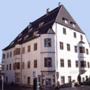

Mercatini di Natale Bolzano
Date & Orari Apertura Mercatini
I Mercatini di Natale di Bolzano sono tra i più noti e visitati dell’area alpina, in assoluto i più antichi d’Italia. Per l’appuntamento più atteso dell’anno, Bolzano sottolinea come sempre il suo carattere di punto di incontro tra cultura mediterranea e mitteleuropea, trasformandosi in un vivace centro di manifestazioni ed eventi tutti dedicati al Natale e mettendo in primo piano i Mercatini, che si dipaneranno in più vie e piazze della città.
Tutti i Mercatini di Natale di Bolzano
Mercatini di Natale di Bolzano in Piazza Walther
Il più famoso Mercatino di Natale di Bolzano, cosiddetto “originale”, è quello che si svolge nella centro storico della città, nella celebre Piazza Walther. Anche quest’anno le 80 caratteristiche casette in legno propongono i più tradizionali manufatti artigianali e le prelibatezze della gastronomia tirolese, avvolte nella sfolgorante scia di mille luci, lanterne, addobbi e festoni colorati.
Tra le idee regalo più originali si possono trovare candele artigianali, confezioni regalo di miele in ogni forma e tipo, figure intagliate in legno, palle di vetro colorate e portafortuna, prodotti naturali per il benessere fisico e, come sempre, gli immancabili prodotti enogastronomici, specchio di una cucina, quella tirolese, ghiotta e nutriente, ideale per scaldare le fredde giornate di bolzanini e turisti! Ottimi alleati a proposito sono il vin brulè e, tra le bevande preferite, l’Apfelsaft ovvero il succo di mela, preferibilmente servito caldo. Ma la cucina di Bolzano è molto più variegata di così: è una straordinaria combinazione fra i forti sapori mitteleuropei e i fantasiosi gusti della tradizione mediterranea. Il Mercatino di Piazza Walther offre anche un ricco programma di animazione, soprattutto nei fine settimana, quando l’afflusso di visitatori cresce. Così, tra musiche tradizionali, suonatori di corno, bande musicali, cantastorie e narratori di fiabe, non ci sarà tempo per annoiarsi!
Ma se il “grande” Mercatino del centro storico di Bolzano è il più antico e famoso della città, non è certamente l’unico, anzi, nel corso degli anni si sono aggiunte diverse iniziative nei luoghi attorno a piazza Walther.
Mercatini di Natale dei giovani artigiani
Tra il 03 e il 22 dicembre si svolge nella Piazzetta della Mostra un delizioso Mercatino di Natale di Bolzano tutto dedicato all’artigianato. Per gli amanti dei regali fatti a mano, questo Mercatino di Natale, organizzato dal Centro Relazioni Umane di Bolzano, è davvero un paradiso. In effetti vi si trovano stoffe ricamate, lavori su seta, bigiotteria, lavori in ceramica e vetro, tutte idee regalo molto preziose. Ma la vera particolarità di questi oggetti, oltre al fatto di essere realizzati da artigiani molto giovani, è la loro totale ed autentica manifattura, dal momento che sono realizzati senza l’ausilio di nessun tipo di macchina ma totalmente a mano, come vuole la tradizione.
HOTEL
BUS
Scegli il Mercatino di Natale che più fa per TE!
Newsletter
Iscriviti alla Newsletter dei Mercatini di Natale e ricevi tutti gli aggiornamenti via Mail!
Contatti
02.39523309 / 02.39523311
Lun-Sab | 9.00-18.00
327.1493890
Sempre attivo e Whatsapp
Mercatini di Natale di Bolzano dell’Artigianato
Tra dal 26 novembre al 06 gennaio in Piazza del Municipio si tiene un altro Mercatino di Natale dedicato interamente all’artigianato. Otto artigiani locali escono dalle loro botteghe e danno luogo all’esposizione. Questa iniziativa diventa un punto d’incontro molto amato e frequentato, stimolo per trovare idee regalo davvero tipiche di Bolzano, pezzi unici per decorare la propria casa. Per l’occasione, la piazza viene anche animata da una giostra per i più piccoli e, solo nei fine settimana, da concerti e proposte culturali varie.
Mercatini di Bolzano delle Associazioni Onlus
Le vie del centro sono letteralmente invase di bancarelle dei Mercatini di Natale di Bolzano. Ne ritroviamo anche tutt’intorno alla piazza principale, in Piazza del Grano, in via Argentieri e in via della Mostra. Si tratta di un Mercatino organizzato da Associazioni no profit, che utilizzano il ricavato delle vendite per progetti di solidarietà. Un motivo in più per visitarlo, visto che a Natale si è tutti più buoni!
Bosco Incantato: il Mercatino di Natale alpino
A pochi passi dal Mercatino di Natale di piazza Walther, si diffonde la magica atmosfera del Mercatino di Palazzo Campofranco. L’iniziativa è davvero originale e punta a valorizzare la cultura tirolese ed il suo strettissimo rapporto con il bosco, habitat ideale e fonte di cibo insostituibile.
Sono molto interessanti anche i Mercatini di Bolzano dell’usato, molto numerosi e presenti tutti all’incirca dal 26 novembre al 06 gennaio. Sulla Passeggiata Lungotalvera si trova ad esempio il vero e proprio Mercatino delle Pulci, organizzato dall’Associazione ZOT, in cui vengono proposti oggetti usati, libri, curiosità e ogni tipo di collezionismo. In Piazza Mazzini e in Piazza Matteotti invece l’associazione di collezionisti il Baule del nonno organizza due omonimi Mercatini dell’usato. Infine, ce n’è uno anche nella zona sud di Bolzano, nel Cortile della Vives in via Galvani: si chiama Happymarkt, a sottolineare la felicità degli acquisti, di qualità ma poco costosi, che si possono fare!
Non solo i Mercatini di Natale di Bolzano
Tra le iniziative interessanti da ricordare in aggiunta ai Mercatini di Bolzano ci sono le seguenti:
- la Festa delle Api, che si tiene in data 07 dicembre dalle 10.30 in via Resia ed è una giornata di incontri, musica e gastronomia dedicata al mondo delle laboriose api e dei loro utilissimi prodotti;
- la Lunga Notte dei Musei che si tiene il 26 novembre dalle 16.00 all’1.00 di notte e consiste nell’offrire a cittadini e turisti l’ingresso gratuito in cinque musei a scelta tra il Castel Roncolo, il Museo Civico, il Museo Archeologico dell’Alto Adige, il Museo della Scuola, il Museion, il Museo Mercantile e il Museo di Scienze Naturali: un’occasione irripetibile!
- l’apertura quotidiana delle caselle del grande calendario dell’Avvento, situato sull’edificio Max Valier.
Bolzano
.jpeg) Bolzano: città da scoprire tutto
l’anno
Bolzano: città da scoprire tutto
l’anno
Scritto da Melissa De Cillis in data 19 Set 2014 » Bolzano
Nonostante si dica molto sull'Italia, questa bellissima nazione, conosciuta in tutta Europa ed in tutto il mondo grazie alla sua cordialità, accoglienza, simpatia e buona cucina, accoglie turisti da ogni dove. Ovviamente se il turismo è sempre in crescita ci sono degli ottimi motivi oltre a quelli sopra elencati. Infatti nonostante le pecche che in particolar modo stanno ...Continua la lettura »
Viaggi ai Mercatini di Natale di Bolzano
Parti con il viaggio ai Mercatini di Natale di Bolzano con un viaggio che ti porterà nell'atmosfera Natalizia del Tirolo e ti farà vivere emozioni uniche. Il pacchetto offre la visita completa dei Mercatini di Bolzano, facendovi respirare la sua atmosfera unica e riuscendo a soddisfare tutte le esigenze.
Scheda Viaggio ai Mercatini di Natale a Bolzano
COS'E' INCLUSO
- Viaggio A/R con pullman GT;
- Visita Mercatini di Natale Bolzano;
- Ingresso e visita al Thuniversum, la fabbrica museo della Thun;
- Buono Sconto per Bevanda calda;
- Accompagnatore durante il viaggio;
- Trasferimenti come da programma;
- Assicurazione RC;
- Materiale informativo;
- Assistenza 24h;
IN REGALO PER OGNI PRENOTAZIONE
1 Voucher Omaggio per 1 persona per la SPA Il Regno di Dioniso (valido 3 mesi)
Programma Viaggio ai Mercatini di Natale a Bolzano
- Ritrovo nei luoghi stabiliti e partenza per Bolzano;
- Sosta al Thuniversum prima dell'arrivo, la fabbrica delle famosissime ceramiche della Thun, e visita del museo con possibilità di acquisto delle meravigliose ceramiche; quale miglior situazione per trovare originali idee regalo?
- Arrivo a Bolzano, città dell'Alto Adige famosa per essere quella con la maggiore concentrazione di popolazione di lingua italiana, verso metà mattinata;
- Tempo libero a disposizione per visitare la città e i suoi Mercatini di Natale, i più famosi d'Italia grazie alle sue numerose casette in legno in cui si può trovare di tutto, dall'oggettino ornamentale in legno ai cibi tipici e caratteristici della zona.
- Pranzo libero.
- Ritrovo nel tardo pomeriggio e ripartenza.
- Arrivo a destinazione in tarda serata (intorno alle 24.00).
Città di Partenza Viaggio ai Mercatini di Natale a Bolzano
Il Pacchetto non Comprende
- quanto non specificato nella sezione nel prezzo è incluso.
Date e Orari Mercatini di Bolzano
Mercatino di Natale di Bolzano
dal 17-11-2022 al 01-01-2022 – Piazza Walther
- 17/11/2022 alle 17.00 inaugurazione
- Lunedi – Venerdì dalle 10.00 alle 19.00, stand gastronomici fino alle 21.30
- Sabato dalle 9.00 alle 19.00, stand gastronomici fino alle 21.30
- Domenica e giorni festivi dalle 9.00 alle 19.00, stand gastronomici fino alle 21.30
- dal 04/12/2022 al 14/12/2022 dalle 9.00 alle 20.00, stand gastronomici fino alle 21.30
Mercatino dei Giovani Artigiani
dal 02/12/2022 al 21/12/2022 – Piazzetta della mostra
Il Mercatino dei Giovani Artigiani è organizzato dal Centro Relazioni Umane di Bolzano nella Piazzetta della Mostra
Mercatino dell’Artigianato
dal 25/11/2022 al 01/01/2022 – Piazza Municipio
Il Mercatino dell’Artigianato è organizzato in Piazza Municipio
Mercatino di Natale delle Associazioni Onlus
dal 25/11/2022 al 21/12/2022 – Piazza del Grano – Via Argentieri – Via della Mostra
Il Mercatino di Natale delle Associazioni Onlus si tiene in tre punti di Bolzano: in Piazza del Grano, Via Argentieri e in Via della Mostra.
- Tutti i giorni dalle 10.00 alle 19.00
Mercatino di Natale Alpino: Bosco Incantato
dal 25/11/2022 al 01/01/2022 – Cortile di Palazzo Campofranco
Happy Markt – Mercatino dell’Usato
Happy Markt – Mercatino dell’Usato
03/12/2022 e 07/12/2022 – Cortile della Vives – Via Galvani – Bolzano Sud
L’Happymarkt o mercatino dell’usato si tiene in tre punti di Bolzano: nel Cortile della Vives, in Via Galvani e a Bolzano Sud.
- Tutti i giorni dalle 6.00 alle 14.00
Storia di Bolzano
In epoca preistorica la piana di Bolzano era attraversata da tre fiumi, l’Adige, l’Isarco ed il Tàlvera, ed era sicuramente coperta da stagni e paludi. Alcuni reperti archeologici, scoperti sulla collina di Castelfeder vicino ad Ora e sulle alture di Castelvecchio nei pressi di Caldaro, fanno ritenere che i primi insediamenti umani siano sorti sulle pendici dei monti circostanti.
In epoca storica, la zona fu abitata da tribù nordiche dei Reti, che nel 15 a.C. vennero disperse dalle legioni romane comandate dal generale Druso, figlio adottivo di Augusto. Druso conquistò la Val d’Adige e la Val d’Isarco e fondò il nucleo originario della futura città, costruendo il Pons Drusi, tuttora esistente sul Tàlvera. La zona venne inclusa nella decima legione d’Italia (Venetia et Histria) ed il borgo, per la sua posizione naturale, divenne una munita stazione sulla Retica, la grande strada romana che si spingeva oltre il Brennero e raggiungeva Innsbruck e Augusta.
Dopo la caduta di Roma, la regione subì l’invasione dei Goti, dei Franchi, dei Longobardi e dei Baiuvari. Ormai parte del Sacro Romano Impero, la zona del Ponte Drusio cominciò a chiamarsi Bauzanum mentre la popolazione si spostò sulla collina del Virgolo, sopra Bolzano. Nel secolo XI l’imperatore Corrado diede in feudo la zona di Bolzano al principe-vescovo di Trento Ulderico II, che trasformò l’antico contesto di insediamenti sparsi e poco aggregati della conca bolzanina in un fiorente borgo mercantile. Fu quello il primo vero centro abitato che, alla fine del XII secolo, darà luogo alla città di Bolzano.
Ma questa prima fase di espansione urbana fu contrassegnata anche da grande conflittualità, soprattutto tra i vescovi di Trento ed i conti di Tirolo. Con il risolversi del contrasto a completo favore di Mainardo di Tirolo-Gorizia alla fine del XIII secolo ed in seguito con il pacifico passaggio agli Asburgo nel 1363, il clima politico e sociale bolzanino sembrò avviarsi verso un periodo di relativa tranquillità e sviluppo economico, contrassegnato anche dai privilegi che gli Asburgo elargirono alla città, tra cui quello per il consiglio comunale concesso dal re Federico III nel 1442. Lo sviluppo urbanistico ed edilizio della città subì un marcato processo di accelerazione e di addensamento tra XV e XVI secolo, quando il duca Sigismondo ed il re Massimiliano I fecero di Bolzano un centro economico e politico della contea del Tirolo.
Nel XVI e XVII secolo l’evoluzione dell’antico distretto cittadino verso un centro urbano di importanza sovraregionale continuò. Infatti la città, grazie anche alla notevole immigrazione dalle aree meridionali della Germania e dell’Austria, compì un salto di qualità a livello di insediamento di attività produttive, artigianali e mercantili. I proventi della produzione vinicola, delle attività connesse ai trasporti ed ai depositi di merci e quelli legati alle fiere arricchirono la consistenza ed il prestigio del ceto dei ricchi mercanti nel vecchio nucleo cittadino dei Portici: si iniziavano a delineare così le premesse della radicale evoluzione delle strutture economiche e sociali che si sarebbe avviata e compiuta nei secoli seguenti.
In seguito alla rivoluzione francese e alla Pace di Presburgo, che seguì la sconfitta dell’Austria, la città fu annessa dapprima alla Baviera e, per un breve periodo, al Regno Italico. Durante l’occupazione napoleonica Bolzano fu a capo di un distretto del dipartimento dell’Alto Adige (Haut-Adige od Ober-Etsch), il cui capoluogo era Trento. Dopo la caduta di Napoleone tornò all’Impero austriaco, alla quale rimase ininterrottamente fino al 1918. Con il ritorno all’Austria la città tornò anche a crescere dal punto di vista edilizio ed economico. Nel 1910-1911 il territorio cittadino si espanse costituendo la cosiddetta “Groß-Bozen”, dato che il comune di Dodiciville (Zwölfmalgreien) decise di costituire un unico comune con Bolzano.
Dopo la Prima Guerra Mondiale Bolzano, insieme al resto dell’attuale provincia autonoma, venne annessa all’Italia. Con l’avvento del Fascismo il territorio di Bolzano venne massicciamente italianizzato, tanto che oggi è uno dei cinque comuni della provincia di Bolzano a maggioranza italofona. In questa fase la città duplica la propria grandezza con la costruzione dell’attuale zona industriale, dei rioni “Littorio” (oggi Novacella), “Dux” (oggi Don Bosco), “Venezia” (oggi San Quirino). Questi quartieri servivano ad ospitare gli impiegati statali e gli operai delle nuove industrie fatti migrare dal fascismo per mettere in minoranza la popolazione di lingua tedesca e ladina.
Dopo l’armistizio italiano nella Seconda Guerra Mondiale Bolzano, insieme al resto dell’Alto Adige e delle limitrofe province di Trento e Belluno, venne inclusa nella Alpenvorland, la zona d’operazione delle Prealpi creata da Hitler, diventandone il capoluogo. In questo periodo in città vennero ripristinati i toponimi tedeschi e vennero utilizzati diversi rifugi antiaerei, alcuni dei quali tuttora integri.
Dopo la Seconda Guerra Mondiale Bolzano rimase all’Italia, a patto però di garantire una forte autonomia al Trentino-Alto Adige e di tutelare la minoranza di lingua tedesca che abitava la provincia di Bolzano. Ancora oggi la regione è a statuto speciale.
Cosa vedere a Bolzano
Bolzano viene definita “La Porta delle Dolomiti” poiché è circondata da splendide
montagne e si trova alla confluenza dei fiumi Adige ed Isarco.
Anticamente Bolzano era una città di
mercanti e mecenati e questa sua caratteristica è rimasta nel tempo, trasformandola oggi in una piccola
capitale europea. Qui si respirano infatti un’aria di globalizzazione in cui l’italiano ed il tedescono convivono ed
un’atmosfera cosmopolita che rende Bolzano un’attrazione culturale ed artistica per visitatori da tutto il mondo.
Luoghi da non perdere a Bolzano
Tra i luoghi e i monumenti che vale la pena di visitare c’è innanzitutto il Duomo, la Chiesa Parrocchiale di Santa Maria Assunta, sotto la quale sono stati ritrovati resti di una chiesa paleocristiana del V-VI secolo e di una chiesa del VIII-IX secolo, e che al suo interno contiene pregiati affreschi gotici.
Poi va ricordato il Museo Archeologico dell’Alto Adige, inaugurato nel 1991 e nel quale è conservata una mummia trovata nel 1984 da due escursionisti in perfetto stato di conservazione. Scoperta eccezionale questa, che ha permesso di effettuare studi approfonditi sulle condizioni di vita dell’uomo nella zona alpina nel IV millennio a.C., data a cui risale la mummia appunto. Oltre a questa, nel Museo sono conservati anche altri reperti che documentano la storia della zona dal periodo paleolitico.
Altro luogo simbolo di Bolzano è Piazza Walther, sede del più antico Mercatino di Natale d’Italia e del più importante di Bolzano, dedicata al poeta tedesco Walther von der Vogelweide, vissuto in epoca medievale. Nella piazza si trova un suo monumento e si affaccia il Duomo di Bolzano.
Musei a Bolzano
La città di Bolzano esprime la sua ingente ricchezza culturale anche attraverso i numerosi musei.
Tutti i Musei di Bolzano
Museo Archeologico dell’Alto Adige
Nel centro storico della città si trova il Museo Archeologico dell’Alto Adige, che documenta la storia dell’intera regione dalla fine dell’ultima era glaciale (15.000 a.C.) fino all’età carolingia (circa 800 d.C.). Il museo, che si estende su una superficie di 1200 metri quadrati, è stato inaugurato a Bolzano nel marzo del 1991. Il fulcro dell’esposizione del museo è “Ötzi, l’uomo venuto dal ghiaccio”. Si tratta di una mummia trovata nel 1984 da due escursionisti in perfetto stato di conservazione, una scoperta eccezionale, che ha permesso di effettuare studi approfonditi sulle condizioni di vita dell’uomo nella zona alpina nel IV millennio a.C., data a cui risale la mummia appunto. Nel museo non solo viene esposta la mummia con il suo equipaggiamento ma, con l’ausilio di pannelli esplicativi, foto, filmati e stazioni multimediali interattive, vengono ricostruite le varie fasi della scoperta, del recupero, degli scavi e degli esami clinici sull’importante reperto archeologico.
Museo Civico
Il Museo Civico conserva importantissime collezioni storico-artistiche, tra le più ricche nel loro genere in Alto Adige. Esso spicca ai margini dell’attuale zona pedonale con la sua torre merlata, l’erker angolare ed il grande portale. Il museo fu costruito nel 1902-1904 sulle fondamenta della residenza medievale Hurlach e fu inaugurato nel 1905. Esso conserva importantissime collezioni, tra cui una pregevole raccolta di reperti archeologici, testimonianze di arte dell’epoca medievale e gotica, ed una significativa esposizione di costumi tradizionali con i relativi copricapi ed accessori. Si possono anche ammirare numerosi oggetti di arte popolare provenienti dalla Val Sarentina, dalla Val d’Isarco e dalla Pusteria. Da vedere scrigni ed altari a portelle dell’arte gotica, Madonne romaniche, costumi delle vallate locali, Stuben; opere pittoriche della storia artistica locale a partire dal ‘500.
Museo d’Arte Moderna e Contemporanea
Il Museo d’Arte Moderna e Contemporanea,fondato nel 1987, presenta artisti ed opere d’arte moderna e contemporanea con mostre temporanee ed azioni nello spazio pubblico.
Museo dei Presepi
Il Museo dei presepi nel Convento Muri di Gries, collocato nella torre romanica dell’Abbazia, mostra presepi storici, di cui uno risalente al 1750 circa, ed una rassegna dell’attuale produzione di presepi in Alto Adige.
Messner Mountain Museum Firmian
Si ricorda poi il Messner Mountain Museum Firmian, situato a Castel Firmiano (a sud di Bolzano). È un museo autoritario, che prescrive in che modo vuole essere visitato. Un percorso conduce attorno alla “montagna sacra”, davanti a vetrine, sculture, animali imbalsamati, oggetti simbolici, foto e quadri, ricordi di tante spedizioni in tutto il mondo. Il castello e le costruzioni d’acciaio nero poste nelle torri fungono da palcoscenico. In Tibet il giro attorno alla montagna sacra viene chiamato ‘kora’ e nel suo museo Reinhold Messner ha voluto creare per l’appunto una kora. La cappella in rovina sulla vetta del monte del castello è tabù come la vetta del monte Kailash in Tibet. Il MMM non vuole essere né un museo degli scalatori né un museo dei monti altoatesini, ma si prefigge di mostrare quello che la montagna fa degli uomini. Il cuore del Messner Mountain Museum viene chiamato da Reinhold Messner “la montagna incantata”.
Museo di Scienze Naturali dell’Alto Adige
Il Museo di Scienze Naturali dell’Alto Adige a Bolzano, inaugurato nel 1997, offre al visitatore un percorso storico, culturale e scientifico attraverso una delle regioni europee più ricche di contrasti, illustrando la formazione e le caratteristiche delle sue zone montane e di fondovalle. Oltre all’esposizione permanente, dove si possono osservare anche animali vivi ed un acquario marino con barriera corallina, il museo offre varie mostre temporanee ed attività didattiche. Punti focali del museo relativi alla ricerca e alla catalogazione sono i settori geologico, botanico e zoologico. Il Museo di Scienze Naturali dell’Alto Adige è collocato nella sede principesca di riscossione dei censi fondiari e dei diritti di dogana.
Cucina di Bolzano
Come accade anche in Trentino, i piatti tipici della tradizione alto-atesina sono ricchi e calorici, basati su ingredienti come il burro, la farina di granturco e la carne di selvaggina. Tra le specialità, si ricordano i canederli alla bolzanina, la zuppa al vino bianco e la zuppa di vino di Terlano. I dolci poi sono golosissimi: ci sono gli strudel, le frittelle di mele e le mele al forno ripiene, le torte con i frutti del sottobosco o a base di farina di castagne e zucca.